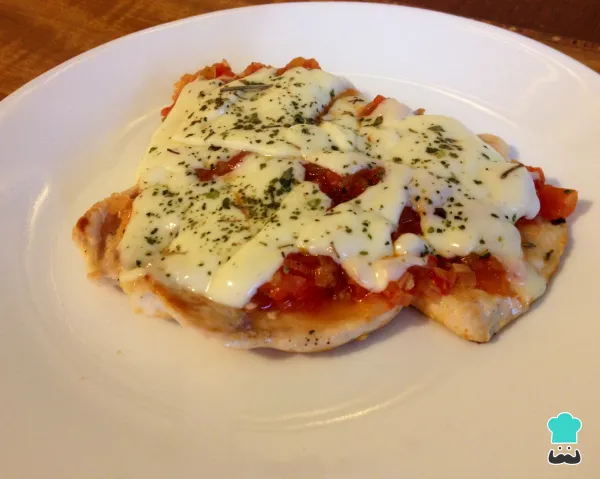

Pollo Napolitano

Ingredientes
- 4 pechugas de pollo
- Sal y pimienta al gusto
- 2 huevos
- Pan rallado
- 200 g de jamón cocido
- 200 g de queso mozzarella
- 1 taza de salsa de tomate
- Aceite para freír
- Orégano seco
Preparación
- Salpimentar las pechugas de pollo.
- Pasar las pechugas por huevo batido y luego por pan rallado.
- Freír las pechugas en aceite caliente hasta que estén doradas. Escurrir sobre papel absorbente.
- Colocar las pechugas en una bandeja para horno.
- Cubrir cada pechuga con salsa de tomate, una loncha de jamón y queso mozzarella.
- Espolvorear con orégano.
- Gratinar en el horno a 180°C hasta que el queso se derrita y dore.
- Servir caliente, acompañado de papas fritas o ensalada.